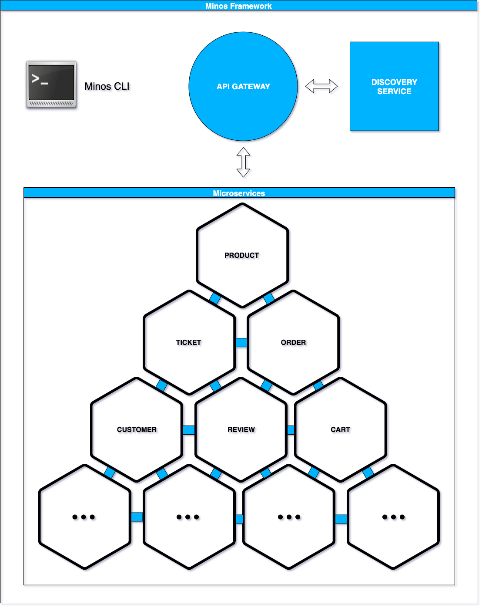

Introduction¶
Description¶
Minos is a framework which helps you create reactive microservices in Python. Internally, it leverages Event Sourcing, CQRS and a message driven architecture to fulfil the commitments of an asynchronous environment.
{kind=link}
Advantages¶
Minos is an opensource framework oriented to microservices development. It has been developed with the most recognized design patterns and best practices.
It is oriented to make the construction of a microservices architecture simple and to facilitate the developer’s work.
Foundational Patterns¶
Decomposition¶
Decompose by subdomain: Define services corresponding to Domain-Driven Design (DDD) subdomains
Self-contained Service: Microservices can respond to a synchronous request without waiting for the response from any other service.
Data management¶
Database per service: Keep each microservice’s persistent data private to that service and accessible only via its API. A service’s transactions only involve its database.
Saga: Transaction that spans multiple services.
API Composition (SOON): Implement a query by defining an API Composer, which invoking the services that own the data and performs an in-memory join of the results.
CQRS: view database, which is a read-only replica that is designed to support queries that retrieves data from microservice. The application keeps the replica up to data by subscribing to Domain events published by the service that own the data.
Domain event: A service often needs to publish events when it updates its data. These events might be needed, for example, to update a CQRS view.
Event Sourcing: Event sourcing persists the state of a business entity such an Order or a Customer as a sequence of state-changing events. Whenever the state of a business entity changes, a new event is appended to the list of events. Since saving an event is a single operation, it is inherently atomic. The application reconstructs an entity’s current state by replaying the events.
Communication style¶
Messaging: Services communicating by exchanging messages over messaging channels. (Apache Kafka is used in this case)
External APIs¶
API gateway: Single entry point for all clients. The API gateway proxy/route to the appropriate service.
Service discovery¶
Service registry: Database of services. A service registry might invoke a service instance’s health check API to verify that it is able to handle requests
Self Registration: Each service instance register on startup and unregister on stop.
Security¶
Access token: The API Gateway authenticates the request and passes an access token (e.g. JSON Web Token) that securely identifies the requestor in each request to the services. A service can include the access token in requests it makes to other services.
Observability¶
Log aggregation (SOON): Use a centralized logging service that aggregates logs from each service instance
Health Check API: A service has an health check API endpoint (e.g. HTTP
/health) that returns the health of the service.